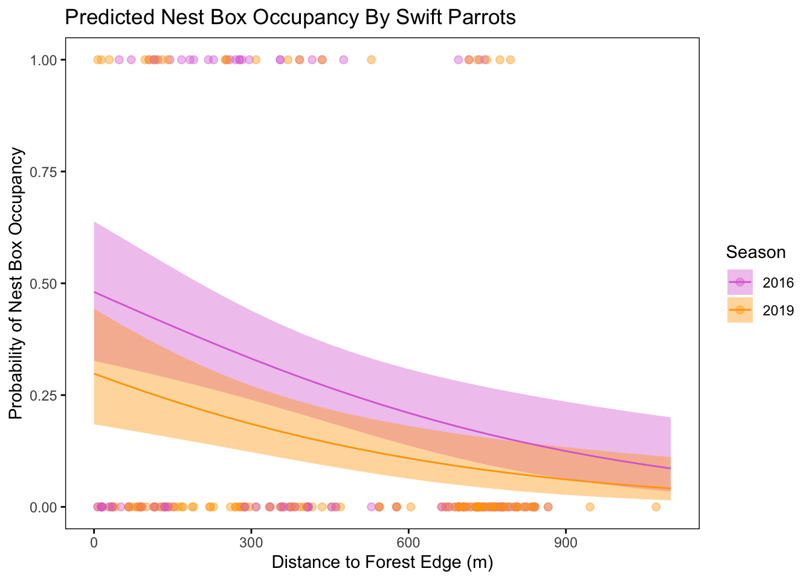

# load packages
library(tidyverse) # general use
library(janitor) # cleaning data frames
library(here) # file organization
library(DHARMa) # check diagnostics
library(MuMIn) # model selection
library(ggeffects) # getting model predictions
# read in data
sst <- read_csv(here("data", "SST_update2023.csv"))
nest_boxes <- read_csv(here("data", "occdist.csv"))ENVS-193DS_spring-2025_final
Set Up
1. Research Writing
a. Transparent Statistical Methods
In part 1, they used a Pearson’s correlation test to determine if there is a statistically significant correlation between distance from headwater(km) and annual total nitrogen load(kg year-1).
In part 2, they used a one-way ANOVA to test whether there is a statistically significant difference in average nitrogen load(kg year-1) among different nitrogen sources(urban land, atmospheric deposition, fertilizer wastewater treatment, and grasslands).
b. More Information Needed
One statistic that should be included is the F-statistic. This is the test statistic for ANOVA that is the ratio of between group variance to within group variance. The F distribution can be used to evaluate significance, and would provide more context.
Another test that should be included is a Tukey Honestly Significant Difference (HSD) test. This would tell which groups are actually different when you compare them. ANOVA only indicates whether at least one group differs from the others. The Tukey’s HSD would provide more detail.
c. Suggestions for rewriting
Part 1: We rejected the null hypothesis that there is no correlation between distance from headwater(km) and annual total nitrogen load(kg year-1) (Pearson’s r=unknown, p=0.02, \(\alpha\)=unknown).
Part 2: We rejected the null hypothesis that there is no difference in average nitrogen load(kg year-1) between sources(urban land, atmospheric deposition, fertilizer, wastewater treatment, and grasslands) (one-way ANOVA, F = unknown, degrees of freedom = unknown, p=0.02, \(\alpha\) = unknown). On average, [unknown source] tend to have a higher average nitrogen load(kg year-1) (difference unknown, 95% CI: unknown).
2. Data Visualization
a. Cleaning and Summarizing
sst_clean <- sst |>
mutate( year = year(date),
month = month(date, label = TRUE)) |>
filter(year %in% 2018:2023) |>
group_by(year, month) |> # group by year and month
summarise(mean_monthly_sst = mean(temp)) |>
arrange(desc(year), match(month, month.abb)) |>
mutate(year = factor(year, levels = sort(unique(year))))`summarise()` has grouped output by 'year'. You can override using the
`.groups` argument.sst_clean |> slice_sample(n = 5)# A tibble: 30 × 3
# Groups: year [6]
year month mean_monthly_sst
<fct> <ord> <dbl>
1 2018 Dec 15.6
2 2018 Jan 15.0
3 2018 Aug 19.6
4 2018 Feb 14.3
5 2018 Nov 17.9
6 2019 Jun 15.8
7 2019 Apr 13.7
8 2019 Mar 13.6
9 2019 Jan 14.7
10 2019 Sep 18.8
# ℹ 20 more rowsstr(sst_clean)gropd_df [72 × 3] (S3: grouped_df/tbl_df/tbl/data.frame)
$ year : Factor w/ 6 levels "2018","2019",..: 6 6 6 6 6 6 6 6 6 6 ...
$ month : Ord.factor w/ 12 levels "Jan"<"Feb"<"Mar"<..: 1 2 3 4 5 6 7 8 9 10 ...
$ mean_monthly_sst: num [1:72] 14 13 12.8 12.4 14.3 ...
- attr(*, "groups")= tibble [6 × 2] (S3: tbl_df/tbl/data.frame)
..$ year : Factor w/ 6 levels "2018","2019",..: 1 2 3 4 5 6
..$ .rows: list<int> [1:6]
.. ..$ : int [1:12] 61 62 63 64 65 66 67 68 69 70 ...
.. ..$ : int [1:12] 49 50 51 52 53 54 55 56 57 58 ...
.. ..$ : int [1:12] 37 38 39 40 41 42 43 44 45 46 ...
.. ..$ : int [1:12] 25 26 27 28 29 30 31 32 33 34 ...
.. ..$ : int [1:12] 13 14 15 16 17 18 19 20 21 22 ...
.. ..$ : int [1:12] 1 2 3 4 5 6 7 8 9 10 ...
.. ..@ ptype: int(0)
..- attr(*, ".drop")= logi TRUEb. Visualize the Data
ggplot(data = sst_clean,
aes( x = month,
y = mean_monthly_sst,
group = year,
color = year)) +
geom_line() +
geom_point() +
scale_color_brewer(name = "Year", palette = "Reds") +
labs( x = "Month",
y = "Mean monthly sea surface temperature (ºC)") +
theme_minimal() +
theme(panel.background = element_rect(fill = "white", color = "black"),
panel.grid = element_blank(),
legend.position = c(0.1, 0.75),
axis.ticks = element_line(color = "black"))Warning: A numeric `legend.position` argument in `theme()` was deprecated in ggplot2
3.5.0.
ℹ Please use the `legend.position.inside` argument of `theme()` instead.3. Data Analysis
a. Response Variable
In this data set, the 1s and 0s represent whether a nest box was occupied by a specific species. A value of 1 means that the box was occupied by the indicated species (for example sp = 1 for swift parrot), and a value of 0 means it was occupied by another species or left empty depending on the variable.
b. Purpose of Study
The main difference between Swift Parrots and the other two species is that Swift Parrots are critically endangered and they rarely breed in the same location in successive years. As a result, nontarget birds such as Common Starlings and Tree Martins can learn to identify permanently deployed nest boxes as a resource.
c. Difference in “Seasons”
The data is presented from the summer breeding seasons of 2016 and 2019, when parrots bred at the study area, triggered by a mast tree flowering event. In 2016, the nest boxes were newly deployed and in 2019 the boxes still remained from 2016.
d. Table of Models
4 models total:
| Model number | Season | Distance to forest edge | Model description |
|---|---|---|---|
| 0 | no predictors (null model) | ||
| 1 | X | X | all predictors (full model) |
| 2 | X | season only | |
| 3 | X | distance to forest edge only |
e. Run the Models
nest_boxes_clean <- nest_boxes |> # starting data frame
clean_names() |> # clean column names
mutate(season = as_factor(season))
# model 0: null model
model0 <- glm(
sp ~ 1, # formula
data = nest_boxes_clean, # data frame
family = "binomial" # for binary data
)
# model 1: all predictors
model1 <- glm(
sp ~ season + edge_distance, # formula
data = nest_boxes_clean, # data frame
family = "binomial" # for binary data
)
# model 2: season only
model2 <- glm(
sp ~ season, # formula
data = nest_boxes_clean, # data frame
family = "binomial" # for binary data
)
# model 3: distance to forest edge only
model3 <- glm(
sp ~ edge_distance, # formula
data = nest_boxes_clean, # data frame
family = "binomial" # for binary data
)f. Check the diagnositics
plot(simulateResiduals(model0)) 
plot(simulateResiduals(model1))
plot(simulateResiduals(model2))
plot(simulateResiduals(model3))
g. Select the Best Model
AICc(model0,
model1,
model2,
model3) |>
# arranging output in descending order of AIC
arrange(AICc) df AICc
model1 3 226.3133
model3 2 229.6716
model2 2 236.3744
model0 1 238.8318The best model as determined by Akaike’s Information Criterion (AIC) included both season and distance to forest edge as predictors of Swift Parrot nest box occupancy.
h. Visualize the Model Predictions
model1_predictions <- ggpredict(
model1, # model object
terms = c("edge_distance", "season") # predictors
) |>
# treating this like a regular data frame
# renaming the columns
rename(edge_distance = x,
season = group) |>
as.data.frame() |>
mutate(season = fct_relevel(season, "2016", "2019"))Data were 'prettified'. Consider using `terms="edge_distance [all]"` to
get smooth plots.# base layer: ggplot
ggplot(nest_boxes_clean,
aes(x = edge_distance,
y = sp,
color = season)) +
geom_point(size = 2,
alpha = 0.4) +
geom_ribbon(data = model1_predictions,
aes(x = edge_distance,
ymin = conf.low,
ymax = conf.high,
fill = season),
alpha = 0.4,
inherit.aes = FALSE) +
geom_line(data = model1_predictions,
aes(x = edge_distance,
y = predicted,
color = season)) +
# manually setting colors
scale_color_manual(values = c("2016" = "orchid", "2019" = "orange")) +
scale_fill_manual(values = c("2016" = "orchid", "2019" = "orange")) +
# labelling x- and y-axis
labs(x = "Distance to Forest Edge (m)",
y = "Probability of Swift Parrot Occupancy",
title = "Predicted Nest Box Occupancy By Swift Parrots",
color = "Season",
fill = "Season") +
# clean up theme
theme_minimal() +
theme(panel.grid = element_blank()) # remove gridlines
i. Write a Caption for Figure
j. Calculate Model Predictions
predicted_probabilities <- ggpredict(
model1,
terms = c("edge_distance [0,900]", "season")
)
print(predicted_probabilities)# Predicted probabilities of sp
season: 2016
edge_distance | Predicted | 95% CI
--------------------------------------
0 | 0.48 | 0.33, 0.64
900 | 0.12 | 0.06, 0.24
season: 2019
edge_distance | Predicted | 95% CI
--------------------------------------
0 | 0.30 | 0.18, 0.44
900 | 0.06 | 0.03, 0.13